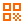

| Standard | Premiun | Máximo | |
|---|---|---|---|
Ingreso con Reconocimiento Facial Implementamos cámaras de alta tecnología para un análisis detallado de rasgos faciales, garantizando un acceso seguro e irreplicable, ideal para áreas restringidas o de alta seguridad en tu negocio. |
|||
Ingreso con TAG Magnético o Clave Utilizamos sistemas de acceso con TAGs magnéticos o códigos numéricos, brindando una solución flexible y confiable para el control de entrada y salida de personal y visitantes. |
|||
Permite la configuración de accesos específicos para proveedores, empleados o clientes, ajustando días y horarios según las necesidades operativas de tu fábrica o comercio. |
|||
Clave de Asalto Ofrecemos códigos de emergencia para empleados en situaciones de riesgo, permitiendo una alerta discreta a nuestro centro de monitoreo para una respuesta inmediata. |
|||
Alerta 24hs Nuestro sistema de vigilancia responde al instante ante aperturas forzadas o uso del código de asalto, asegurando una rápida intervención policial para proteger tu establecimiento. |
|||
Altas y Bajas Ilimitadas Gestiona fácilmente el acceso de un número ilimitado de usuarios, adaptándose a la rotación de personal o a la expansión de tu negocio. |
|||
Reporte de Alertas Monitoreamos y registramos intentos de acceso irregulares o fuera de horario, proporcionando un historial detallado para acciones correctivas. |
|||
Apertura Remota de Emergencia En situaciones críticas, nuestro equipo puede activar el acceso a servicios de emergencia, asegurando una entrada rápida de bomberos, policía o ambulancias. |
|||
Botón de Pánico Virtual Equipamos a tus empleados con una aplicación móvil que incluye 3 botones de pánico (bomberos, policía o ambulancia) para alertar directamente a nuestro centro de monitoreo. |
|||
 Apertura a Distancia Facilita el ingreso de visitas especiales mediante códigos QR temporales, controlando el acceso sin comprometer la seguridad. |
|||
Visualización de Visitas Proporcionamos acceso a cámaras en tiempo real para que puedas verificar quién solicita entrar a tu establecimiento. |
|||
Servicio Técnico Incluimos mantenimiento regular y soporte técnico especializado 24/7, asegurando el óptimo funcionamiento de tu sistema de control de acceso. |
|||
Garantía sin Vencimiento Ofrecemos un plan de garantía completo, incluyendo el reemplazo de equipos y baterías para garantizar la continuidad de tu seguridad sin preocupaciones. |
 Ingresos Personalizados
Ingresos Personalizados